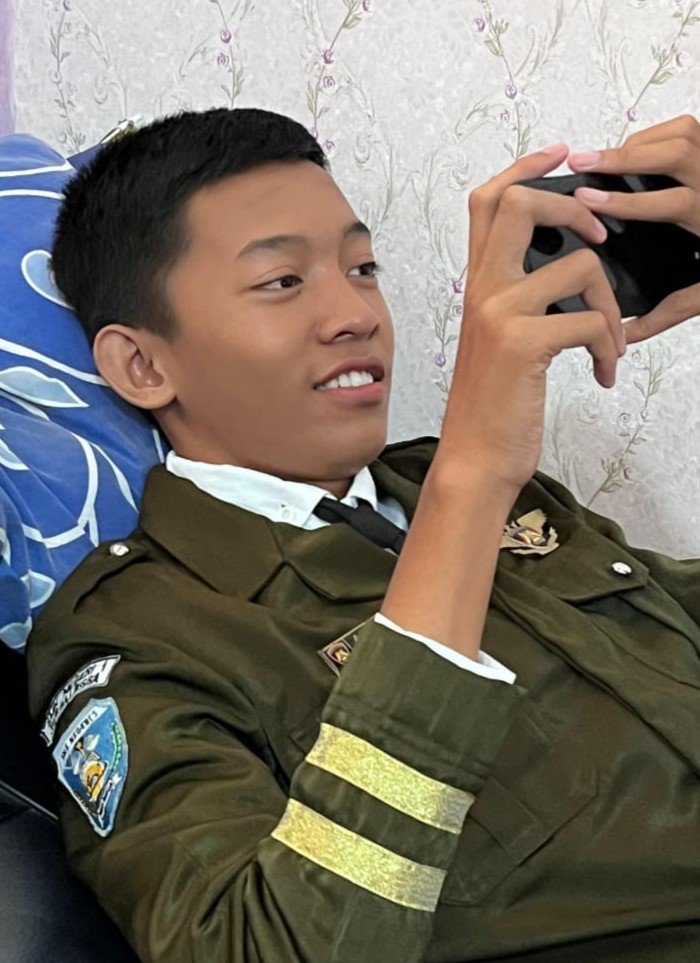
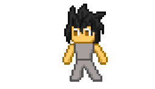
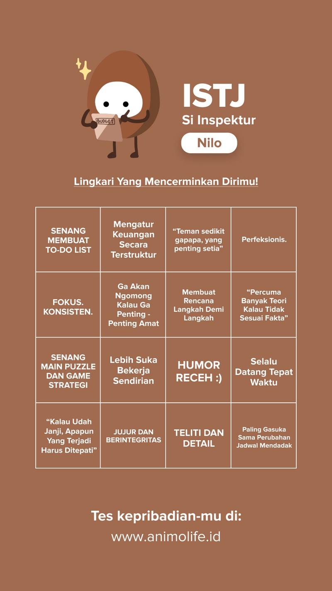

BIODATA DIRI

AIZAR FARUQ NAFIUL UMAM
Sumedang, 11 Juni 2008Sokaraja wetan, rt.1/rw.2, kec.Sokaraja, Kab.Banyumas, Jawa Tengah, Indonesia, Bumi, Bima Sakti
| KELEBIHAN | KEKURANGAN |
|---|---|
- HAL YANG DISUKAI
 - Kucing
- Lagu
- Luar Angkasa
- Komik Fantasi
- Komputer
- Carica dan Seblak
- Olahraga
- Paskibra
- Kartun Boboiboy
- Valorant dan Apex legend

- 3 HAL YANG SAYA INGIN KUASAI DIMASA DEPAN
- Bahasa Pemrograman yang ada di dunia
- Hafal 30 Juz Al-Qur'an
- Cara berkomunikasi yang profesional
- 3 HAL YANG INGIN SAYA PERBAIKI DARI DIRI SAYA
- Bisa mengerjakan urusan dengan cepat karena perfeksionis
- Tidak Bermalas malasan
- Meningkatkan rasa tanggung jawab
Target Saya Dalam Mata Pelajaran Pemrograman Web
Saya ingin mendapat materi yang lebih lebih lebih dari cukup untuk bekerja